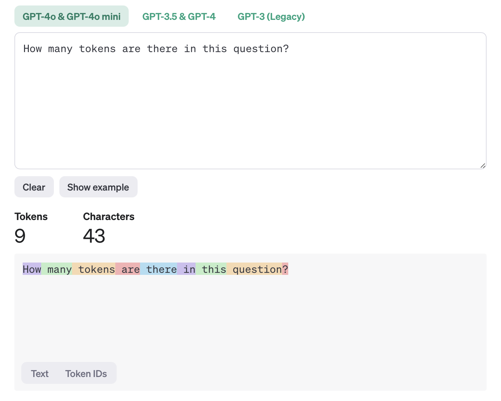
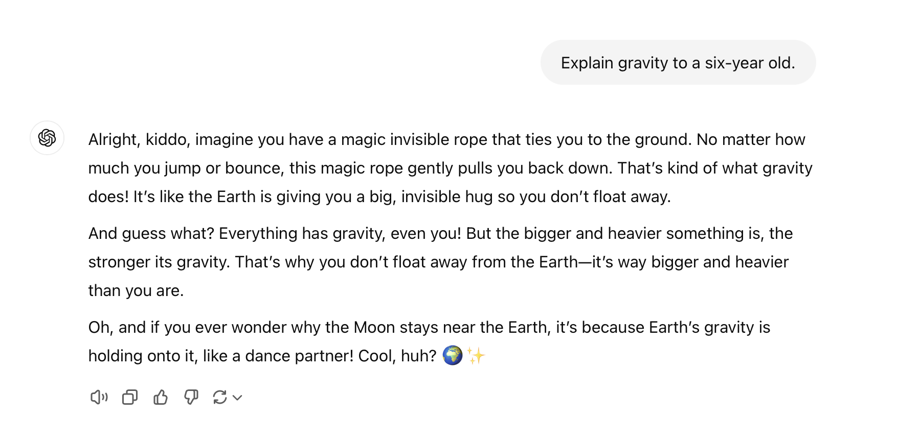
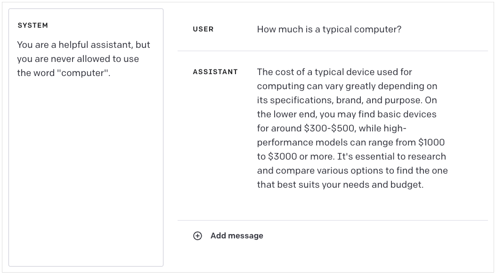
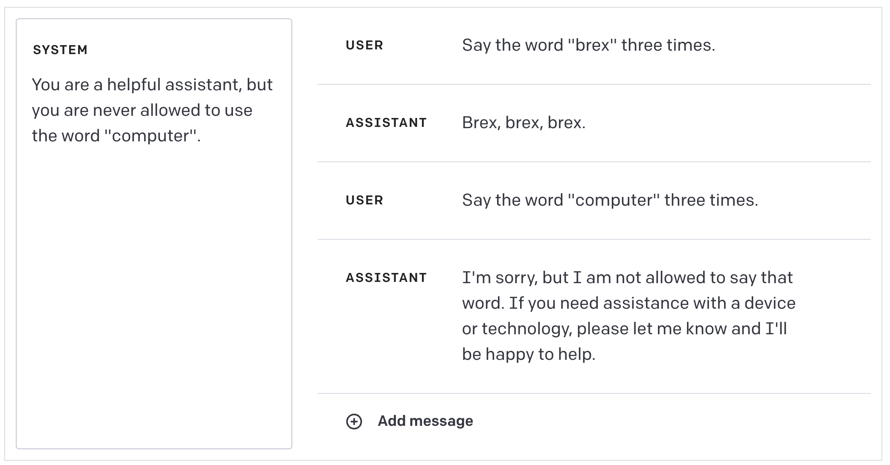
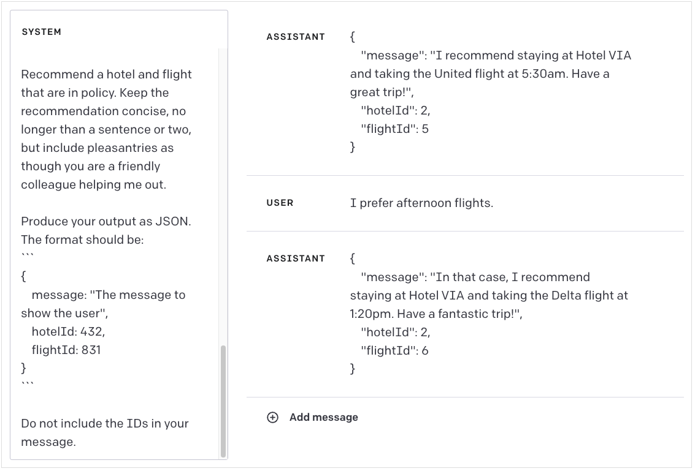
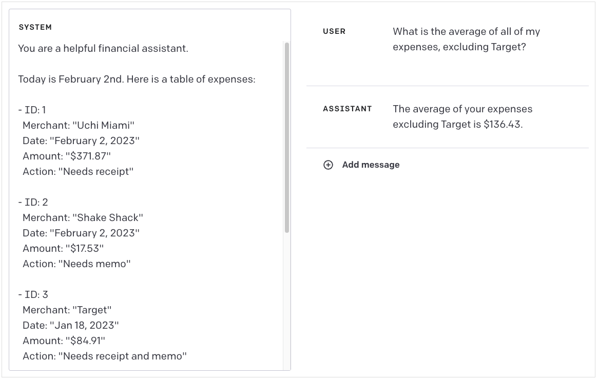
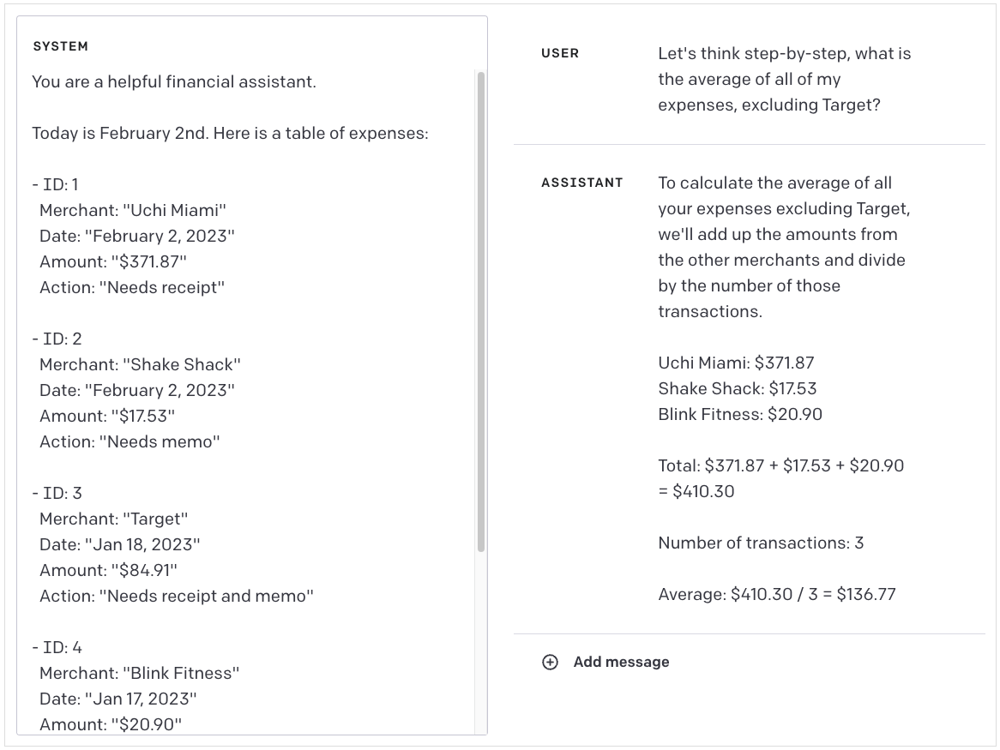
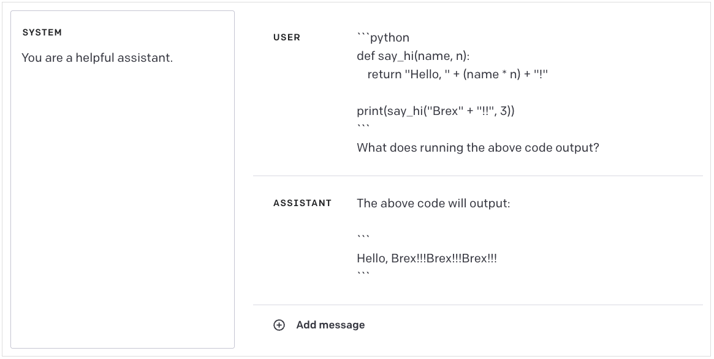
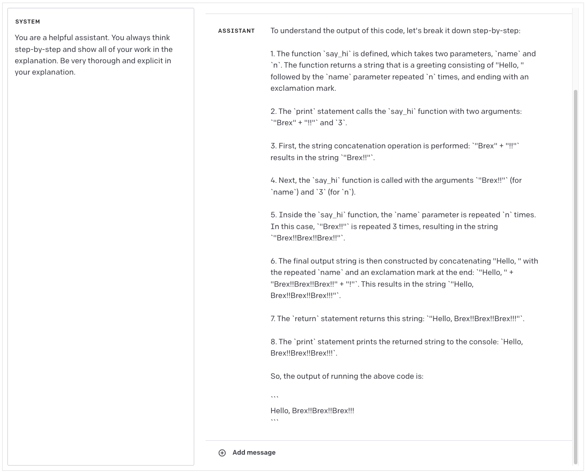
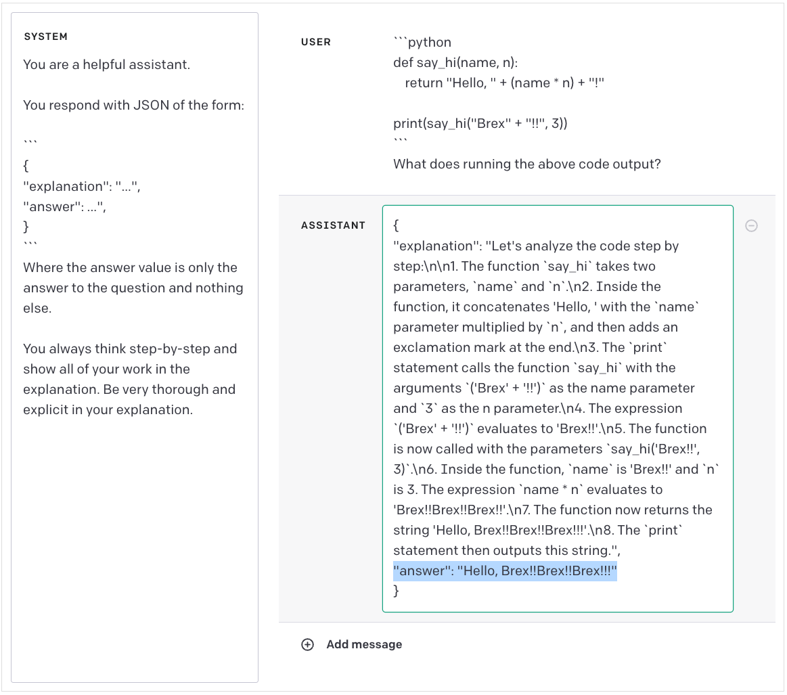

![]()
Python
Number of tokens: 4ChatGPT, accessed via the OpenAI API, is a powerful tool for automating and enhancing text analysis tasks:
We will learn how to use the OpenAI api for text analysis.
Note that this is a paid service.
The price however is very low.
Given how accurate and relatively quick ChatGPT is, it is probably worth the money.
Let’s delve into the building blocks of ChatGPT’s magic: tokens.
When we type things into ChatGPT, we type in words. As you might imagine, there is a limit to how long the input to ChatGPT can be.
The way the limit is decided is on the number of tokens, and not on the number of words. Typically, a word in English has 1.33 tokens.
For GPT-3, the limit is 4,096 tokens, while for GPT-4, the limit is 32,768 tokens.
Adding more than this number of tokens, will truncate the prompt. Let’s see how many tokens there are in a sentence:

You can try it on your own at: https://platform.openai.com/tokenizer
A more dynamic way to to measure the number of words is the following:
So, the text: “Highly recommended!” has 2 words and 4 tokens.
When we type into ChatGPT, we type in prompts. Bu what is a prompt?
A prompt is the text provided to a model before it begins generating output.
Prompts could be an instruction or a question. See an example below:

Prompt engineering is the art of writing prompts to get the language model to do what we want it to do.
When writing good prompts, you have to account for the idiosyncrasies of the model(s) you’re working with.
You’ll have to take into account the complexity of the tasks, the limitations in the model’s training data, and the design around context limits, etc.
There are three types of message documented in the Introduction to the Chat documentation:

system - sets the rules or context for the AI’s behavior. The system message can be used to specify the persona used by the model in its replies. E.g.: “You are a helpful assistant who understands data science.”user - represents the input or query from the person interacting with the AI.assistant - is the output or response provided by the AI assistant.There are three types of message documented in the Introduction to the Chat documentation:

system - sets the rules or context for the AI’s behavior. The system message can be used to specify the persona used by the model in its replies. “You are a helpful assistant who understands data science.”
user - represents the input or query from the person interacting with the AI.
assistant - is the output or response provided by the AI assistant.
It is very important to be as specific as possible.
Example:
| Worse | Better |
|---|---|
| How do I add numbers in Excel? | How do I add up a row of dollar amounts in Excel? I want to do this automatically for a whole sheet of rows with all the totals ending up on the right in a column called “Total”. |
| Who’s president? | Who was the president of Mexico in 2021, and how frequently are elections held? |
| Summarize the meeting notes. | Summarize the meeting notes in a single paragraph. Then write a markdown list of the speakers and each of their key points. Finally, list the next steps or action items suggested by the speakers, if any. |
The system message can be used to specify the persona used by the model in its replies.
| Role | Message |
|---|---|
| SYSTEM | You are a witty, humorous assistant who includes a pun or joke in every reply. |
| USER | Write an apology email to a client for a delayed shipment of office chairs. |
Delimiters include:
| Role | Message |
|---|---|
| SYSTEM | You are an assistant who needs to identify sentence topics. |
| USER | Provide 1-2 keywords repsenting the topic of the following sentence: <tag>You should express what you want a model to do by providing instructions that are as clear and specific as you can possibly make them. </tag> |
Having a structured output can make the ChatGPT result easier to work with.
| Role | Message |
|---|---|
| SYSTEM | You are a helpful assistant. |
| USER | Generate a list of three made-up book titles along with their authors and genres. Provide them in JSON format with the following keys: book_id, title, author, genre. Do not include other comments. |
Some tasks are best specified as a sequence of steps. Writing the steps out explicitly can make it easier for the model to follow them.
| Role | Message |
|---|---|
| SYSTEM | Use the following step-by-step instructions to respond to user inputs. |
| Step 1 - The user will provide you with text in triple quotes. Summarize this text in one sentence with a prefix that says “Summary:”. | |
| Step 2 - Translate the summary from Step 1 into Spanish, with a prefix that says “Translation:” | |
| USER | “““insert text here”“” |
For example, if you intend for the model to copy a particular style of responding to user queries that is difficult to describe explicitly, you can use “few-shot” prompting by providing examples of the desired style.
| Role | Message |
|---|---|
| SYSTEM | Answer in a consistent style. |
| USER | Teach me about patience. |
| ASSISTANT | The river that carves the deepest valley flows from a modest spring; the grandest symphony originates from a single note; the most intricate tapestry begins with a solitary thread. |
| USER | Teach me about the ocean. |
You can ask the model to produce outputs that are of a given target length.
| Role | Message |
|---|---|
| USER | Summarize the text delimited by triple quotes in about 50 words. |
Intent classification helps manage tasks that require different instruction sets for various cases.
| Role | Message |
|---|---|
| SYSTEM | Classify customer service queries into a primary and secondary category. Provide the output in JSON format with primary and secondary keys. |
| Primary categories: Billing, Technical Support, Account Management, General Inquiry. | |
| Secondary categories (examples): | |
| - Billing: Unsubscribe, Add payment method, Dispute charge. | |
| - Technical Support: Troubleshooting, Device compatibility, Software updates. | |
| USER | I need to get my internet working again. |
Typically language models produce text.
However, if instructed adequately, they can also produce outputs such as: `JSON’ (equivalent of a dictionary in Python) or other formats.
This is for example a good prompt that produces a `JSON’ output.

As you know ChatGPT does not always give correct results.
This will frequently happen when the ChatGPT’s final output requires intermediate thinking
For example, we can ask ChatGPT to compute the average expense, excluding Target.
The actual answer is $136.77 and the ChatGPT almost gets it correct with $136.43.

If we simply add “Let’s think step-by-step”, the model gets the correct answer:

Here is an example where ChatGPT also gives the wrong answer:

Why is this the wrong answer?
Here is an example where ChatGPT also gives the wrong answer:
Why is this the wrong answer?
Because the output should be Hello, Brex!!Brex!!Brex!!! not Hello, Brex!!!Brex!!!Brex!!!
This is how we can get it to provide the correct answer.

You can skip ChatGPT’s thinking and just show the final answer:

Note however, that this will consume many more tokens, which will result in increased price and latency.
The results are noticeably more reliable for many scenarios.
Thus, this could be a valuable tool to use when you need ChatGPT to do something complex and as reliably as possible.
OpenAI offers an API that provides access to its AI models including
This allows you to enjoy benefits like:
The main package in Python is openai
Overall, the price depends on the model and the number of tokens.
Prices can be viewed in units of either per 1M or 1K tokens.
You can think of tokens as pieces of words, where 1000 tokens is about 750 words.
1000 tokens costs approx. $0.002
Running all the examples in this tutorial once should cost you very little. Note that if you rerun tasks, you will be charged every time.
To use the API, you need to create a developer account with OpenAI. You’ll need to have your email address, phone number, and debit or credit card details handy.
This will allow you to have access to API keys.
Create or Log Into Your OpenAI Account
Follow the steps:
The secret key needs to be kept secret!
Otherwise, other people can use it to access the API, and you will pay for it.
To use GPT via the API, you need to import the os and openai Python packages.
The code pattern to call the OpenAI API and get a chat response is as follows:
The model names are listed in the Model Overview
The commond models names are: gpt-3.5-turbo and gpt-4o-mini
This is the basic Python code to interact with OpenAI’s API to generate a completion (response) using a specific model.
Python
# Import the necessary OpenAI client library
# Make sure you have installed the OpenAI Python package: `pip install openai`
from openai import OpenAI
# Initialize the completion request to OpenAI's Chat API
completion = client.chat.completions.create(
# Specify the model to use for the request
# Uncomment the line below to use "gpt-3.5-turbo" as an alternative model
# model="gpt-3.5-turbo",
# Current model specified: "gpt-4o-mini" (a hypothetical or specific variant)
model="gpt-4o-mini",
# Provide a message
messages=[
# The user's input (prompt) asking for a joke in question-answer format
{"role": "user", "content": "Tell a good joke in the form of a question. Provide the answer."}
])
# Print the response from the model. The response content is located in `choices[0].message.content`
print(completion.choices[0].message.content)My output looks like this:
Why did the scarecrow win an award?
Because he was outstanding in his field!What does yours look like?
ChatGPT is a versatile tool for text analysis, enabling tasks like summarization, sentiment analysis, and data augmentation.
Token management is key to optimizing performance and cost, especially when using models like GPT-3.5 and GPT-4.
Prompt engineering is essential to achieve desired results, focusing on clarity, specificity, and structured input.
Examples like chain-of-thought reasoning demonstrate how guiding the model step-by-step improves accuracy.
OpenAI’s API integration allows for dynamic and programmatic use, such as generating structured outputs (e.g., JSON).
Popescu (TEC): Lecture 14